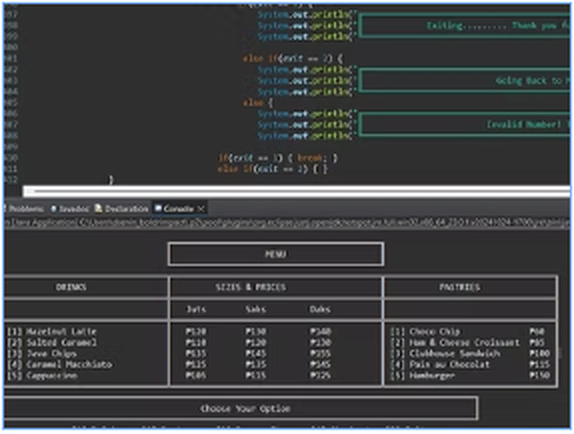
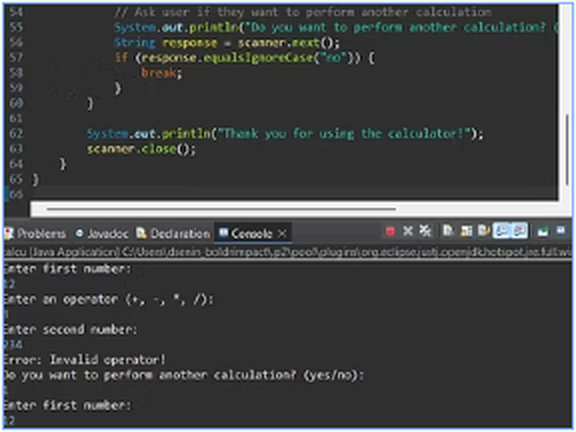
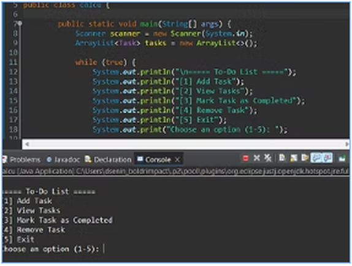
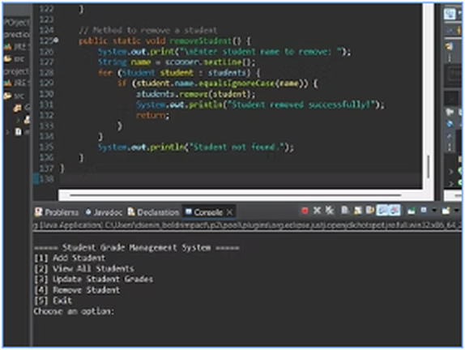

01 / JAVA

A Simple Point-of-Sale (POS)
A command-line ordering system where customers can choose drinks and pastries, view prices, adjust quantities, and calculate a transaction total.
Discuss this projectBSIT STUDENT · ASPIRING DEVELOPER
I'm a Bachelor of Science in Information Technology student at Bulacan State University who enjoys programming, exploring new technologies, and turning ideas into useful digital experiences.
Ben Senin
Student Developer
A LITTLE ABOUT ME
I'm a third-year BSIT student at Bulacan State University with an interest in web and application development. I like learning by building projects, testing ideas, and improving my work one step at a time.
My current goal is to strengthen my development skills, create projects that solve real problems, and grow into a developer who builds simple, effective, and user-friendly solutions.
SELECTED WORK
Java projects that helped me practice programming logic and problem solving.

A command-line ordering system where customers can choose drinks and pastries, view prices, adjust quantities, and calculate a transaction total.
Discuss this project
A console-based calculator for addition, subtraction, multiplication, and division, with prompts to continue or exit after a calculation.
Discuss this project
A command-line task manager that lets users add tasks, view the list, mark tasks as completed, and remove tasks.
Discuss this project
A Java console application for adding, viewing, updating, and removing student records, calculating grades, and checking pass/fail status.
Discuss this projectEach image is cropped to focus on the relevant project screenshot.